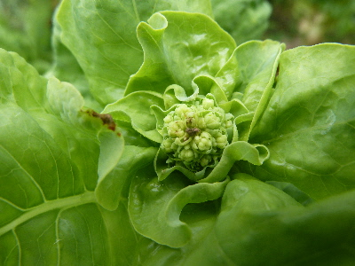
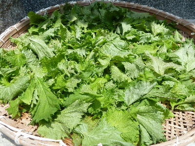
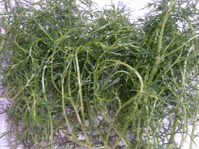
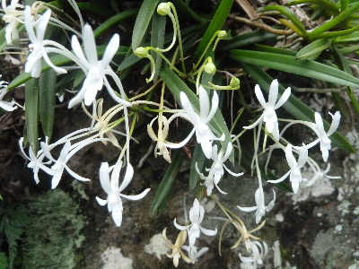
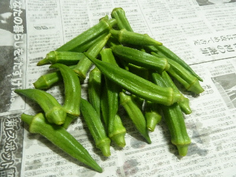

遊びで植物を育てよう
2017/07/23
サンチュに蕾が出来ました。
沢山食べたサンチュですが、蕾ができたのでもう終わりです。

食べ過ぎってくらい食べたので、丁度いいタイミングかな。
どんな花が咲くでしょうね。
【7月TOP】
【日記TOP】
【園芸TOP】
2017/07/15
大葉を干してみました。
沢山あるけど、大葉ってなかなか食べれないです。

ドライハーブになるかなと思い、干してみました。
細かく刻んだ冷凍大葉はチャーハンやおにぎり等に使っていたんですが、ドライも同じ要領で使えるかな。
（これは光に当てすぎて、茶色くなって失敗しました。）
【7月TOP】
【日記TOP】
【園芸TOP】
2017/07/09
丘ヒジキを収穫しました。
水洗いしてたら、なんとなく海藻？って気がちょっとだけしました。

雑草感も少しありました。
食べ感想は、あんまり味がなかったです。
ドレッシングで、好みの味に仕上げるといいのかな？
個人的にはマヨネーズとは相性が悪いかなと思いました。
しばらく収穫の時期があるので、色々味を試そうと思います。
好みの食べ方らが見つからなかったら、来年は植えない。
【7月TOP】
【日記TOP】
【園芸TOP】
2017/07/08
風蘭が咲いていました。
蘭の仲間はなんとなく派手な感じがします。

木や岩にくっつけていっぱい増やしたいと思うんですが、管理するのが大変そうと思うと何もできないです。
条件のいい場所に、ちょっと置くくらいがいいかな。
【7月TOP】
【日記TOP】
【園芸TOP】
2017/07/02
オクラの収獲が始まりました。
既にナスやトマト、キュウリの収獲は始まっていたんですが、オクラも採れ出しました。

久々に食べたんですが、オクラは美味しいな。
【7月TOP】
【日記TOP】
【園芸TOP】
過去の日記
【2024年7月の日記】
【2023年7月の日記】
【2022年7月の日記】
【2021年7月の日記】
【2020年7月の日記】
【2019年7月の日記】
【2018年7月の日記】
【2017年7月の日記】
【2016年7月の日記】
【2015年7月の日記】
【2014年7月の日記】
【2013年7月の日記】
【2012年7月の日記】
【7月TOP】
【日記TOP】
【園芸TOP】
熱中症に注意しましょう。
【おいしいものを食べよう。】【たくさん寝よう。】
【ソロ活をしよう!】【季節感のあることをしよう。】【動画視聴はほどほどに。】【当サイトの全てのコンテンツは無断転載禁止です。】